ЧАШКА ЗАДНЕГО ДИФФЕРЕНЦИАЛА В СБОРЕ (для моделей с блокировкой дифференциала) > ПОВТОРНАЯ СБОРКА |
| 1. УСТАНОВИТЕ КОРПУС ДИФФЕРЕНЦИАЛА В СБОРЕ |
| 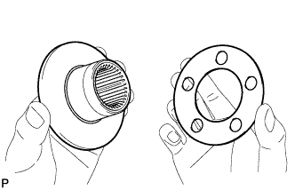 |
Установите упорную шайбу полуосевой шестерни заднего дифференциала на полуосевую шестерню заднего дифференциала.
Установите упорную шайбу сателлита заднего дифференциала и сателлит заднего дифференциала на крестовину заднего дифференциала.
Зафиксируйте правый корпус дифференциала на месте.
| 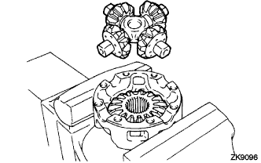 |
Установите полуосевую шестерню заднего дифференциала и крестовину заднего дифференциала в правый корпус дифференциала.
| 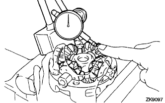 |
С помощью индикатора часового типа измерьте боковой зазор правого корпуса дифференциала, прижимая сателлит к корпусу.
Снимите крестовину заднего дифференциала с правого корпуса дифференциала.
| 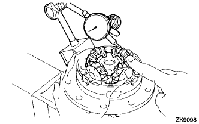 |
Установите полуосевую шестерню заднего дифференциала и крестовину заднего дифференциала в левый корпус дифференциала.
С помощью индикатора часового типа измерьте боковой зазор левого корпуса дифференциала, прижимая сателлит к корпусу.
| Толщина | Толщина |
| 0,88 - 0,92 мм (0,0346 - 0,0362 дюйма) | 1,18 - 1,22 мм (0,0465 - 0,0480 дюйма) |
| 0,98 - 1,02 мм (0,0386 - 0,0402 дюйма) | 1,28 - 1,32 мм (0,0504 - 0,00520 дюйма) |
| 1,08 - 1,12 мм (0,0425 - 0,0441 дюйма) | - |
| 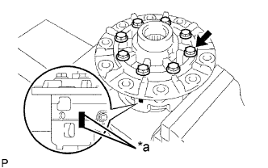 |
Совместите метки и соберите корпус дифференциала из правого и левого корпусов.
| *a | Метка |
С помощью молотка с пластмассовым покрытием установите корпус дифференциала.
Вверните 8 болтов.
| 2. УСТАНОВИТЕ КОРОННУЮ ШЕСТЕРНЮ ДИФФЕРЕНЦИАЛА |
Очистите контактные поверхности корпуса дифференциала и коронной шестерни.
Разогрейте коронную шестерню в кипящей воде примерно до 100°C (212°F).
Осторожно выньте коронную шестерню из кипящей воды.
После того, как поверхность коронной шестерни полностью обсохнет, быстро установите ее в корпус дифференциала.
| 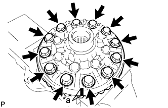 |
Совместите метки на коронной шестерне и корпусе дифференциала.
| *a | Метка |
| *1 | Стопорная пластина |
После того как коронная шестерня в достаточной степени остынет, нанесите герметик-фиксатор на 12 болтов и вверните их.
| 3. УСТАНОВИТЕ ПОДШИПНИК КОРПУСА ЗАДНЕГО ДИФФЕРЕНЦИАЛА |
| 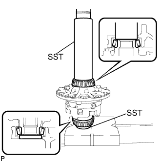 |
С помощью SST и пресса установите подшипник в корпус дифференциала.
| 4. ПРОВЕРЬТЕ БИЕНИЕ КОРОННОЙ ШЕСТЕРНИ ДИФФЕРЕНЦИАЛА |
| 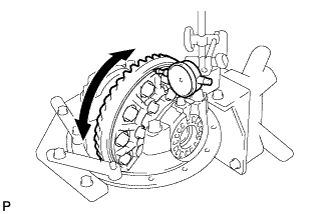 |
Установите корпус дифференциала в чашку, а затем заверните 2 регулировочных гайки так, чтобы в подшипнике не было люфта.
Установите 2 крышки подшипника и закрепите их 4 болтами.
С помощью индикатора часового типа измерьте биение коронной шестерни.
Снимите 2 крышки подшипника, 2 регулировочных гайки и корпус дифференциала.
| 5. УСТАНОВИТЕ ПЕРЕДНИЙ КОНИЧЕСКИЙ РОЛИКОВЫЙ ПОДШИПНИК ЗАДНЕЙ ВЕДУЩЕЙ ШЕСТЕРНИ |
| 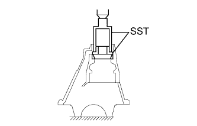 |
С помощью SST и пресса установите конический роликовый подшипник в чашку.
| 6. УСТАНОВИТЕ ЗАДНИЙ КОНИЧЕСКИЙ РОЛИКОВЫЙ ПОДШИПНИК ЗАДНЕЙ ВЕДУЩЕЙ ШЕСТЕРНИ (НАРУЖНЫЙ) |
| 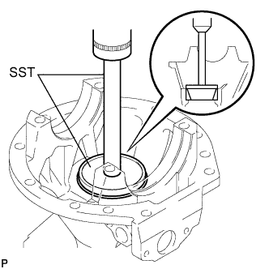 |
Установите в чашку плоскую шайбу.
С помощью SST и пресса установите конический роликовый подшипник в чашку.
| 7. УСТАНОВИТЕ ЗАДНИЙ КОНИЧЕСКИЙ РОЛИКОВЫЙ ПОДШИПНИК ЗАДНЕЙ ВЕДУЩЕЙ ШЕСТЕРНИ (ВНУТРЕННИЙ) |
| 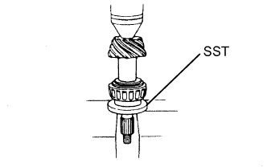 |
С помощью SST и пресса установите конический роликовый подшипник на ведущую шестерню.
| 8. ОТРЕГУЛИРУЙТЕ ПРЕДНАТЯГ ВЕДУЩЕЙ ШЕСТЕРНИ ДИФФЕРЕНЦИАЛА |
| 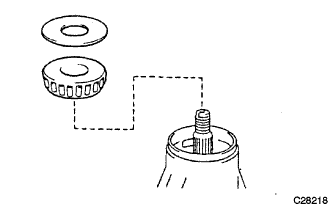 |
Установите ведущую шестерню, конический роликовый подшипник задней ведущей шестерни и маслоотражатель ведущей шестерни заднего дифференциала.
| 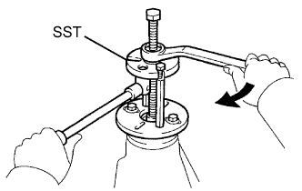 |
С помощью SST установите соединительный фланец ведущей шестерни.
Смажьте резьбу гайки гипоидным маслом LSD (для дифференциалов повышенного трения).
| 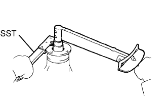 |
Удерживая соединительный фланец ведущей шестерни с помощью SST, затяните гайку.
| 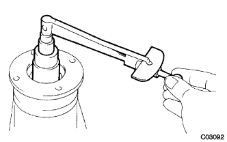 |
Динамометрическим ключом измерьте преднатяг.
| Параметр / Устройство | Заданные условия |
| Новый подшипник | 0,83 - 2,18 Н*м (8,64 - 22,2 кгс*см, 7,35 - 19,3 фунт-сила-дюймов) |
| Подшипник, бывший в употреблении | 0,88 - 1,98 Н*м (8,97 - 20,2 кгс*см, 7,79 - 17,5 фунт-сила-дюймов) |
| 9. УСТАНОВИТЕ КОРПУС ДИФФЕРЕНЦИАЛА В СБОРЕ |
| 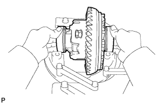 |
Установите 2 наружных кольца подшипников на соответствующие подшипники.
| 10. УСТАНОВИТЕ РЕГУЛИРОВОЧНУЮ ГАЙКУ ПОДШИПНИКА ЗАДНЕГО ДИФФЕРЕНЦИАЛА |
| 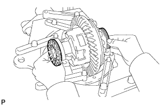 |
Установите 2 регулировочных гайки на чашку, убедившись в том, что они имеют надлежащую резьбу.
| 11. ПРОВЕРЬТЕ И ОТРЕГУЛИРУЙТЕ БОКОВОЙ ЗАЗОР МЕЖДУ ЗУБЬЯМИ ВЕДУЩЕЙ ШЕСТЕРНИ ДИФФЕРЕНЦИАЛА И КОРОННОЙ ШЕСТЕРНИ ДИФФЕРЕНЦИАЛА |
| 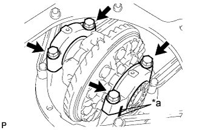 |
Совместите метки на крышке и чашке.
| *a | Метка |
Установите крышки правого и левого подшипников, закрепив их 4 болтами.
| 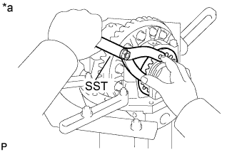 |
Затяните 4 болта крышек подшипников с номинальным моментом затяжки, а затем ослабьте их настолько, чтобы появилась возможность поворачивать регулировочные гайки с помощью SST.
| *a | Для левой стороны |
Используя SST, затяните регулировочную гайку со стороны коронной шестерни так, чтобы боковой зазор между зубьями в главной передаче составил примерно 0,2 мм (0,008 дюйма).
| 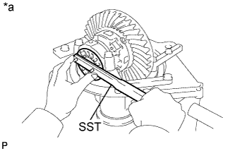 |
Поворачивая коронную шестерню, затяните регулировочную гайку со стороны ведущей шестерни с помощью SST.
| *a | Для правой стороны |
Используя SST, затяните регулировочную гайку на 1-1,5 прорези от положения нулевого преднатяга.
| 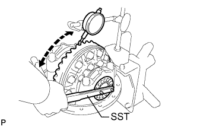 |
С помощью индикатора часового типа отрегулируйте боковой зазор между зубьями в главной передаче так, чтобы он оказался в пределах номинального диапазона.
Затяните болты крышек подшипников.
| *a | Метка |
| 12. ПРОВЕРЬТЕ СУММАРНЫЙ ПРЕДНАТЯГ |
С помощью динамометрического ключа измерьте преднатяг в положении касания зубьев ведущей и коронной шестерен.
| 13. ПРОВЕРЬТЕ ПЯТНО КОНТАКТА ЗУБЬЕВ КОРОННОЙ И ВЕДУЩЕЙ ШЕСТЕРЕН |
| 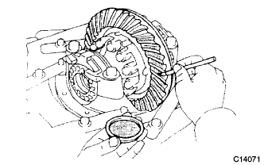 |
В 3 различных местах нанесите на 3 или 4 зубца коронной шестерни берлинскую лазурь.
Удерживая вилку с фланцем, проверните зубчатый венец с обоих направлениях.
Проверьте образец контакта зубьев.
| 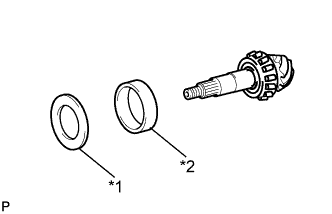 |
| *1 | Плоская шайба |
| *2 | Задний конический роликовый подшипник задней ведущей шестерни (наружное кольцо) |
| Толщина | Толщина |
| 1,845 - 1,855 мм (0,0726 - 0,0730 дюйма) | 2,085 - 2,095 мм (0,0821 - 0,0825 дюйма) |
| 1,855 - 1,865 мм (0,0730 - 0,0734 дюйма) | 2,095 - 2,105 мм (0,0825 - 0,0829 дюйма) |
| 1,865 - 1,875 мм (0,0734 - 0,0738 дюйма) | 2,105 - 2,115 мм (0,0829 - 0,0833 дюйма) |
| 1,875 - 1,885 мм (0,0738 - 0,0742 дюйма) | 2,115 - 2,125 мм (0,0833 - 0,0837 дюйма) |
| 1,885 - 1,895 мм (0,0742 - 0,0746 дюйма) | 2,125 - 2,135 мм (0,0837 - 0,0841 дюйма) |
| 1,895 - 1,905 мм (0,0746 - 0,0750 дюйма) | 2,135 - 2,145 мм (0,0841 - 0,0844 дюйма) |
| 1,905 - 1,915 мм (0,0750 - 0,0754 дюйма) | 2,145 - 2,155 мм (0,0844 - 0,0848 дюйма) |
| 1,915 - 1,925 мм (0,0754 - 0,0758 дюйма) | 2,155 - 2,165 мм (0,0848 - 0,0852 дюйма) |
| 1,925 - 1,935 мм (0,0758 - 0,0762 дюйма) | 2,165 - 2,175 мм (0,0852 - 0,0856 дюйма) |
| 1,935 - 1,945 мм (0,0762 - 0,0766 дюйма) | 2,175 - 2,185 мм (0,0856 - 0,0860 дюйма) |
| 1,945 - 1,955 мм (0,0766 - 0,0770 дюйма) | 2,185 - 2,195 мм (0,0860 - 0,0864 дюйма) |
| 1,955 - 1,965 мм (0,0770 - 0,0774 дюйма) | 2,195 - 2,205 мм (0,0864 - 0,0868 дюйма) |
| 1,965 - 1,975 мм (0,0774 - 0,0778 дюйма) | 2,205 - 2,215 мм (0,0868 - 0,0872 дюйма) |
| 1,975 - 1,985 мм (0,0778 - 0,0781 дюйма) | 2,215 - 2,225 мм (0,0872 - 0,0876 дюйма) |
| 1,985 - 1,995 мм (0,0781 - 0,0785 дюйма) | 2,225 - 2,235 мм (0,0876 - 0,0880 дюйма) |
| 1,995 - 2,005 мм (0,0785 - 0,0789 дюйма) | 2,235 - 2,245 мм (0,0880 - 0,0884 дюйма) |
| 2,005 - 2,015 мм (0,0789 - 0,0793 дюйма) | 2,245 - 2,255 мм (0,0884 - 0,0888 дюйма) |
| 2,015 - 2,025 мм (0,0793 - 0,0797 дюйма) | 2,255 - 2,265 мм (0,0888 - 0,0892 дюйма) |
| 2,025 - 2,035 мм (0,0797 - 0,0801 дюйма) | 2,265 - 2,275 мм (0,0892 - 0,0896 дюйма) |
| 2,035 - 2,045 мм (0,0801 - 0,0805 дюйма) | 2,275 - 2,285 мм (0,0896 - 0,0900 дюйма ) |
| 2,045 - 2,055 мм (0,0805 - 0,0809 дюйма) | 2,285 - 2,295 мм (0,0900 - 0,0904 дюйма) |
| 2,055 - 5,065 мм (0,0809 - 0,0813 дюйма) | 2,295 - 2,305 мм (0,0904 - 0,0907 дюйма) |
| 2,065 - 2,075 мм (0,0813 - 0,0817 дюйма) | 2,305 - 2,315 мм (0,0907 - 0,0911 дюйма) |
| 2,075 - 2,085 мм (0,0817 - 0,0821 дюйма) | - |
| 14. СНИМИТЕ ГАЙКУ ЗАДНЕЙ ВЕДУЩЕЙ ШЕСТЕРНИ |
| 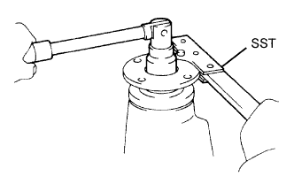 |
Удерживая соединительный фланец ведущей шестерни с помощью SST, отверните гайку.
| 15. СНИМИТЕ СОЕДИНИТЕЛЬНЫЙ ФЛАНЕЦ ЗАДНЕЙ ВЕДУЩЕЙ ШЕСТЕРНИ В СБОРЕ |
| 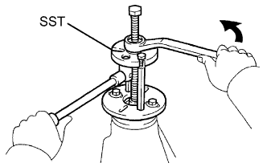 |
С помощью SST снимите соединительный фланец ведущей шестерни.
| 16. СНИМИТЕ МАСЛООТРАЖАТЕЛЬ ВЕДУЩЕЙ ШЕСТЕРНИ ЗАДНЕГО ДИФФЕРЕНЦИАЛА |
| 17. СНИМИТЕ ПЕРЕДНИЙ КОНИЧЕСКИЙ РОЛИКОВЫЙ ПОДШИПНИК ЗАДНЕЙ ВЕДУЩЕЙ ШЕСТЕРНИ |
| 18. УСТАНОВИТЕ РАСПОРНУЮ ВТУЛКУ ПОДШИПНИКА ВЕДУЩЕЙ ШЕСТЕРНИ ЗАДНЕГО ДИФФЕРЕНЦИАЛА |
| 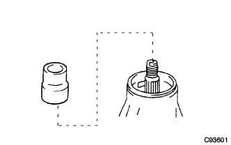 |
Установите новую распорную втулку подшипника на ведущую шестерню.
| 19. УСТАНОВИТЕ МАСЛОНАКОПИТЕЛЬНОЕ КОЛЬЦО ДИФФЕРЕНЦИАЛА |
| 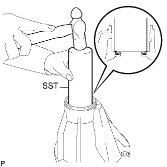 |
С помощью SST вбейте новое маслонакопительное кольцо.
| 20. УСТАНОВИТЕ ПЕРЕДНИЙ КОНИЧЕСКИЙ РОЛИКОВЫЙ ПОДШИПНИК ЗАДНЕЙ ВЕДУЩЕЙ ШЕСТЕРНИ |
| 21. УСТАНОВИТЕ МАСЛООТРАЖАТЕЛЬ ВЕДУЩЕЙ ШЕСТЕРНИ ЗАДНЕГО ДИФФЕРЕНЦИАЛА |
| 22. УСТАНОВИТЕ САЛЬНИК ЧАШКИ ЗАДНЕГО ДИФФЕРЕНЦИАЛА |
| 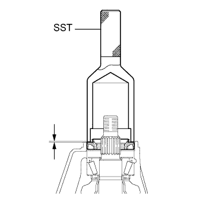 |
Смажьте рабочую кромку сальника универсальной консистентной смазкой.
С помощью SST и молотка установите новый сальник чашки.
| 23. УСТАНОВИТЕ ЗАДНИЙ СОЕДИНИТЕЛЬНЫЙ ФЛАНЕЦ ЗАДНЕЙ ВЕДУЩЕЙ ШЕСТЕРНИ В СБОРЕ |
С помощью SST установите соединительный фланец ведущей шестерни на ведущую шестерню.
Смажьте резьбу новой гайки гипоидным маслом.
Удерживая фланец с помощью SST, затяните гайку.
| 24. ПРОВЕРЬТЕ ПРЕДНАТЯГ ВЕДУЩЕЙ ШЕСТЕРНИ |
| 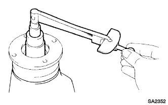 |
С помощью динамометрического ключа измерьте преднатяг для зазора между ведущей и коронной шестернями.
| Параметр / Устройство | Заданные условия |
| Новый подшипник | 0,83 - 2,18 Н*м (8,64 - 22,2 кгс*см, 7,35 - 19,3 фунт-сила-дюйма) |
| Подшипник, бывший в употреблении | 0,88 - 1,98 Н*м (8,97 - 20,2 кгс*см, 7,79 - 17,5 фунт-сила-дюйма) |
| 25. ПРОВЕРЬТЕ СУММАРНЫЙ ПРЕДНАТЯГ |
Динамометрическим ключом измерьте преднатяг.
| 26. ПРОВЕРЬТЕ БОКОВОЙ ЗАЗОР МЕЖДУ ЗУБЬЯМИ В ГЛАВНОЙ ПЕРЕДАЧЕ ДИФФЕРЕНЦИАЛА |
| 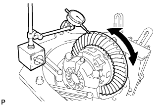 |
С помощью индикатора часового типа проверьте боковой зазор между зубьями в главной передаче.
| 27. ПРОВЕРЬТЕ БИЕНИЕ ЗАДНЕГО СОЕДИНИТЕЛЬНОГО ФЛАНЦА ЗАДНЕЙ ВЕДУЩЕЙ ШЕСТЕРНИ В СБОРЕ |
| 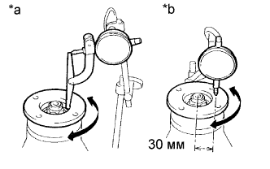 |
С помощью индикатора часового типа измерьте биение соединительного фланца ведущей шестерни по вертикали и горизонтали.
| Параметр / Устройство | Заданные условия |
| Вертикальное биение | 0,14 мм (0,00551 дюйма) |
| Горизонтальное биение | 0,14 мм (0,00551 дюйма) |
| *a | Вертикальное биение |
| *b | Горизонтальное биение |
| 28. УСТАНОВИТЕ ГАЙКУ ЗАДНЕЙ ВЕДУЩЕЙ ШЕСТЕРНИ |
| 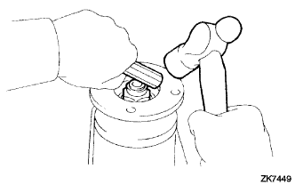 |
С помощью молотка и зубила накерните гайку ведущей шестерни.
| 29. УСТАНОВИТЕ СТОПОР РЕГУЛИРОВОЧНОЙ ГАЙКИ ПОДШИПНИКА ЗАДНЕГО ДИФФЕРЕНЦИАЛА |
| 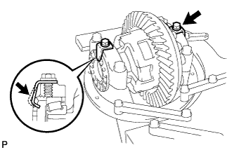 |
Установите 2 новых стопора регулировочных гаек на крышки подшипников и закрепите 2 болтами.
После затяжки болтов загните стопоры гаек.
| 30. УСТАНОВИТЕ ВИЛКУ ПЕРЕКЛЮЧЕНИЯ БЛОКИРОВКИ ЗАДНЕГО ДИФФЕРЕНЦИАЛА |
| 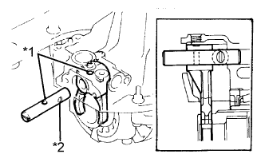 |
Нанесите универсальную консистентную смазку на стержень.
Установите стержень вилки так, чтобы отверстие стержня вилки переключения оказалось совмещенным с отверстием вилки переключения.
| *1 | Отверстие |
| *2 | Канавка |
| 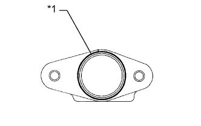 |
Удалите весь материал FIPG, соблюдая осторожность, чтобы не уронить маслоудерживающий упор стержня.
Нанесите герметик на чашку, как показано на рисунке.
| *1 | Герметик |
| 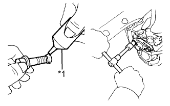 |
Очистите резьбу болтов и отверстия для болтов упора с помощью толуола или трихлорэтилена.
Нанесите герметик-фиксатор на 2-3 витка резьбы на конце каждого крепежного болта.
| *1 | Герметик |
Установите упор стержня и закрепите его 2 болтами.
| 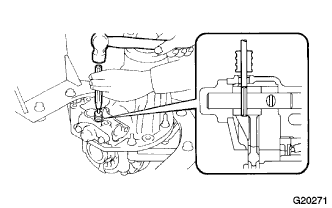 |
С помощью бородка с тонким цилиндрическим концом 5 мм и молотка установите разрезной пружинный штифт в вилку переключения.
| 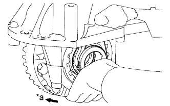 |
Глубоко вставьте втулку блокировки дифференциала и зафиксируйте ее на месте.
| *a | Сторона |
| 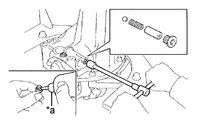 |
Установите шарик, пружину и гнездо пружины.
Очистите резьбу 2 пробок и отверстия пробок с помощью толуола или трихлорэтилена.
| *1 | Герметик |
С помощью торцевого шестигранного ключа с головкой 6 мм установите резьбовые пробки.
| 31. УСТАНОВИТЕ ИНДИКАТОР-ПЕРЕКЛЮЧАТЕЛЬ БЛОКИРОВКИ ДИФФЕРЕНЦИАЛА |
| 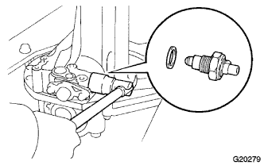 |
Установите индикатор-переключатель вместе с новой прокладкой.
| 32. УСТАНОВИТЕ ВТУЛКУ БЛОКИРОВКИ ЗАДНЕГО ДИФФЕРЕНЦИАЛА |
| 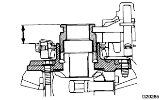 |
Измерьте расстояние между втулкой и концом корпуса дифференциала в разблокированном и заблокированном состояниях дифференциала.
| 33. УСТАНОВИТЕ ПРИВОД ПЕРЕКЛЮЧЕНИЯ БЛОКИРОВКИ ДИФФЕРЕНЦИАЛА |
| 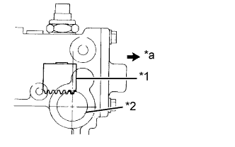 |
Убедитесь, что крайний реечный зуб вилки переключения располагается примерно над осевой линией установочного отверстия привода.
| *a | Снаружи |
| *1 | Вилка переключения |
| *2 | Установочное отверстие привода |
| 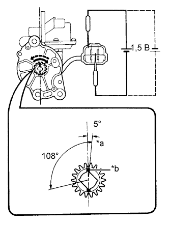 |
Убедитесь, что метки на ведущей шестерне привода смещены по часовой стрелке относительно осевой линии привода на угол 0-5 град.
| *a | Метка |
| *b | Канавка |
Установите на привод новое кольцевое уплотнение.
Нанесите на кольцевое уплотнение тонкий слой трансмиссионного масла.
Нанесите на шестерню универсальную консистентную смазку.
| 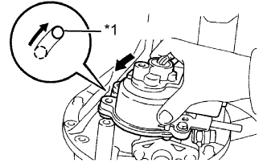 |
Убедитесь, что крайний реечный зуб вилки переключения совмещен с метками на ведущей шестерне привода.
Установите привод так, чтобы штифт со стороны чашки вошел в удлиненное отверстие со стороны привода.
| *1 | Штифт |
Поверните привод против часовой стрелки так, чтобы штифт сдвинулся к концу отверстия, как показано на рисунке.
Вверните болты.